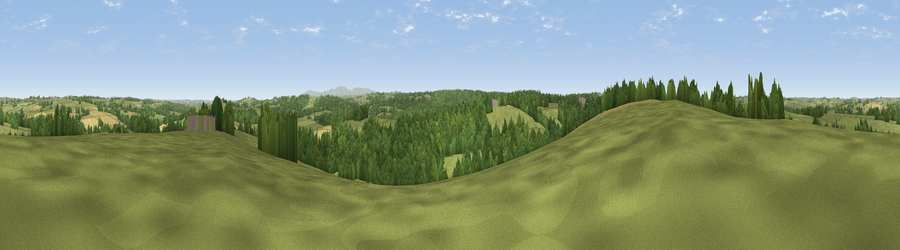

Viewpoint near Bradford
#29134 in England · top 59% of its area beats it · near BradfordThe view, rendered

A 360° render of this exact spot computed from the terrain model, tree cover and land cover — summer colours, afternoon light, calibrated against photographs of famous viewpoints. Real trees, hedges and buildings will differ in detail.
The panorama
Grey silhouette: terrain skyline in each direction (720 bearings, Earth curvature and refraction included). Dashed green: skyline with trees (+15 m) and buildings (+8 m) as obstacles. Blue strip: how far the ground is visible on each bearing.
Where the view opens
Wedge length = distance to the farthest visible ground on that bearing (vegetation-aware). Rings at 10, 25 and 50 km.
What fills the view
55% grassland · 36% woodland · 8% cropland ·
Angular shares of the visible panorama (visual magnitude), not map area. Landscape diversity 0.41 (0–1 Shannon).
Key numbers
More beautiful places nearby
The staircase of upgrades: each row has a higher view potential than everything closer. Driving times are estimates from straight-line distance, calibrated against real road routing — check an actual route before setting out.
| Place | Direction | Drive | Score |
|---|---|---|---|
| Highweek Hill | E · 2 km | ~5 min | 46.6 |
| Viewpoint near Halwill Junction | SSE · 4 km | ~10 min | 55.3 |
| Viewpoint near Hollacombe | WSW · 5 km | ~10 min | 60.3 |
| Viewpoint near Petrockstowe | ENE · 7 km | ~15 min | 65.5 |
| Viewpoint near Buckland Brewer | N · 16 km | ~28 min | 66.6 |
| Viewpoint near Whitstone | WSW · 18 km | ~31 min | 69.4 |
| Viewpoint near High Bullen | NNE · 18 km | ~32 min | 71.2 |
| Viewpoint near Parkham | NNW · 19 km | ~32 min | 81.7 |
50.82874, -4.23456 · source: screening · position refined by local search. Computed location — check access rights before visiting.